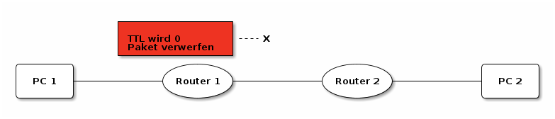
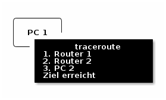

Traceroute
Inhaltsverzeichnis
Traceroute (traceroute unter Linux bzw. tracert unter Windows) ist ein Tool um den Weg,
den ein Datenpaket durch verschiedene Netzwerke, zu einem angegebenen Ziel, zurücklegt zu ermitteln.
Im IP-Header findet man das Feld TTL. Dieses wird vom Absender auf einen Anfangswert gesetzt und bei jedem Hop (übergang von einem Netz in ein anderes; also bei jedem Router) um \(1\) verringert.
Setzt ein Router den Wert auf \(0\) so ist die TTL abgelaufen und das Paket wird verworfen.
Typischerweise sendet der Router, der das Paket verworfen hat dann eine Fehlermeldung an den
Absender (Time To Live expired).
Traceroute macht sich genau das zu nutze und sendet nacheinander Datenpakete mit aufsteigender TTL,
somit wird im ersten Schritt (mit TTL = 1) das Datenpaket vom ersten Router verworfen und zurückgemeldet.
Im zweiten Schritt (mit TTL = 2) vom zweiten Router, im dritten Schritt (mit TTL = 3) vom dritten usw.
Anhand der Absender der Fehlermeldung lässt sich dann darauf schließen, welchen Weg ein Datenpaket zu seinem Ziel zurücklegt.
1. Prinzipieller Ablauf
Im folgenden wird der Prinzipielle Ablauf erklärt ohne, dabei zu sehr auf die tatsächlichen technischen Details einzugehen.
- PC 1 schickt ein Datenpakte mit TTL 1 an (in Richtung) PC 2.
- Router 1 verringert die TTL, diese wird 0, daher wird das Paket verworfen

- Router 1 sendet eine ttl-expired-Fehlermeldung zurück an PC 1
- PC 1 protokolliert von wem die ttl-expired-Fehlermeldung mit TTL 1 kam und schickt ein neues Datenpakt mit TTL 2 an (in Richtung) PC 2.
- Router 1 verringert die TTL, diese wird 1, das Paket wird weitergeleitet.
- Router 2 verringert die TTL, diese wird 0, daher wird das Paket verworfen
- Router 2 sendet eine ttl-expired-Fehlermeldung zurück an PC 1
- PC 1 protokolliert von wem die ttl-expired-Fehlermeldung mit TTL 2 kam und schickt ein neues Datenpakt mit TTL 3 an (in Richtung) PC 2.
- Router 1 verringert die TTL, diese wird 2, das Paket wird weitergeleitet.
- Router 2 verringert die TTL, diese wird 1, das Paket wird weitergeleitet.
- PC 2 sendet eine Antwort an PC 1.
- PC 1 empfängt die Antwort von PC 2 und weiß jetzt, dass das Ziel erreicht wurde.
- PC 1 gibt eine Zusammenfassung der Routenverfolgung aus.

2. traceroute / tracert in Action
Unter Linux und MacOS verwendet das Tool traceroute standardmäßig einfache UDP-Pakete anstatt ICMP-Echo-Requests für die Routenverfolgung.
Möchte man das gleiche verhalten wie das Tool tracert unter Windows erreichen, kann man über den Kommandozeilenparameter -I bzw. --icmp einstellen, dass ICMP-Echo-Requests verwendet werden sollen.
(Dies benötigt je nach Systemkonfiguration jedoch erhöhte Rechte, muss also mit sudo ausgeführt werden.
2.1. Windows
C:\> tracert www.eke.at Routenverfolgung zu www.eke.at [81.19.159.34] über maximal 30 Hops: 1 3 ms 3 ms 2 ms 192.168.159.254 2 10 ms 11 ms 3 ms clnet-b10-193.ikbnet.co.at [83.175.119.193] 3 5 ms 5 ms 5 ms 172.20.255.101 4 8 ms 4 ms 5 ms clnet-56p160-004.ikbnet.co.at [212.56.160.4] 5 * * * Zeitüberschreitung der Anforderung. 6 25 ms 27 ms 25 ms 212.227.120.107 7 * * * Zeitüberschreitung der Anforderung. 8 30 ms 31 ms 31 ms www34sni.world4you.com [81.19.159.34] Ablaufverfolgung beendet.
2.2. Mac OS
~$ traceroute -I www.eke.at traceroute to www.eke.at (81.19.159.34), 64 hops max, 48 byte packets 1 192.168.159.254 (192.168.159.254) 7.528 ms 3.650 ms 3.636 ms 2 clnet-b10-193.ikbnet.co.at (83.175.119.193) 4.730 ms 12.766 ms 4.134 ms 3 172.20.255.101 (172.20.255.101) 5.348 ms 6.260 ms 6.401 ms 4 clnet-56p160-004.ikbnet.co.at (212.56.160.4) 5.467 ms 8.140 ms 6.368 ms 5 * * * 6 212.227.120.105 (212.227.120.105) 35.173 ms 33.078 ms 28.379 ms 7 * * * 8 www34sni.world4you.com (81.19.159.34) 37.544 ms 31.725 ms 31.212 ms
2.3. Linux
~$ sudo traceroute -I www.eke.at traceroute to www.eke.at (81.19.159.34), 30 hops max, 60 byte packets 1 _gateway (10.1.255.254) 4.419 ms 4.385 ms 4.377 ms 2 clnet-b10-193.ikbnet.co.at (83.175.119.193) 5.491 ms 5.484 ms 5.477 ms 3 172.20.255.101 (172.20.255.101) 7.104 ms 7.515 ms 8.444 ms 4 clnet-56p160-004.ikbnet.co.at (212.56.160.4) 7.500 ms 7.492 ms 8.422 ms 5 * * * 6 212.227.120.105 (212.227.120.105) 30.204 ms 26.570 ms 26.717 ms 7 * * * 8 www34sni.world4you.com (81.19.159.34) 28.256 ms 28.559 ms 28.480 ms
3. Traceroute selbst nachvollziehen mittels ping
Mit dem Befehl ping wird kann man den Ablauf einer Routenverfolgung einfach Schritt für Schritt nachvollziehen,
indem man selbst die TTL einstellt und von Aufruf zu Aufruf jeweils um \(1\) erhöht.
Auch der Befehl ping unterscheidet sich leicht zwischen Windows und Linux/MacOS.
Ich verwende den Befehl typischerweise so:
~$ ping -c 3 -i 0.3 -t <TTL> www.eke.at
-c 3bedeutet, dass 3 Echo-Requests geschickt werden-i 0.3bedeutet, dass zwischen den Echo-Requests \(0{,}3\) Sekunden liegen sollen-t <TTL>stellt die gewünschte Time-To-Live ein,<TTL>muss natürlich durch eine Zahl ersetzt werden
Unter Windows würde ein vergleichbarer Befehl so aussehen:
C:\> ping /n 3 /i <TTL> www.eke.at
/n 3bedeutet, dass 3 Echo-Requests geschickt werden/i <TTL>stellt die gewünschte Time-To-Live ein,<TTL>muss natürlich durch eine Zahl ersetzt werden
Im folgenden sieht man wie durch wiederholten Aufruf von ping die selben Informationen gesammelt werden, wie durch traceroute.
~$ ping -c 1 -i 0.3 -t 1 www.eke.at PING www.eke.at (81.19.159.34) 56(84) bytes of data. From _gateway (10.1.255.254) icmp_seq=1 Time to live exceeded --- www.eke.at ping statistics --- 1 packets transmitted, 0 received, +1 errors, 100% packet loss, time 0ms ~$ ping -c 1 -i 0.3 -t 2 www.eke.at PING www.eke.at (81.19.159.34) 56(84) bytes of data. From clnet-b10-193.ikbnet.co.at (83.175.119.193) icmp_seq=1 Time to live exceeded --- www.eke.at ping statistics --- 1 packets transmitted, 0 received, +1 errors, 100% packet loss, time 0ms ~$ ping -c 1 -i 0.3 -t 3 www.eke.at PING www.eke.at (81.19.159.34) 56(84) bytes of data. From 172.20.255.100 (172.20.255.100) icmp_seq=1 Time to live exceeded --- www.eke.at ping statistics --- 1 packets transmitted, 0 received, +1 errors, 100% packet loss, time 0ms ~$ ping -c 1 -i 0.3 -t 4 www.eke.at PING www.eke.at (81.19.159.34) 56(84) bytes of data. From clnet-56p160-004.ikbnet.co.at (212.56.160.4) icmp_seq=1 Time to live exceeded --- www.eke.at ping statistics --- 1 packets transmitted, 0 received, +1 errors, 100% packet loss, time 0ms ~$ ping -c 1 -i 0.3 -t 5 www.eke.at PING www.eke.at (81.19.159.34) 56(84) bytes of data. --- www.eke.at ping statistics --- 1 packets transmitted, 0 received, 100% packet loss, time 0ms ~$ ping -c 1 -i 0.3 -t 6 www.eke.at PING www.eke.at (81.19.159.34) 56(84) bytes of data. From 212.227.120.105 (212.227.120.105) icmp_seq=1 Time to live exceeded --- www.eke.at ping statistics --- 1 packets transmitted, 0 received, +1 errors, 100% packet loss, time 0ms ~$ ping -c 1 -i 0.3 -t 7 www.eke.at PING www.eke.at (81.19.159.34) 56(84) bytes of data. --- www.eke.at ping statistics --- 1 packets transmitted, 0 received, 100% packet loss, time 0ms ~$ ping -c 1 -i 0.3 -t 8 www.eke.at PING www.eke.at (81.19.159.34) 56(84) bytes of data. 64 bytes from www34sni.world4you.com (81.19.159.34): icmp_seq=1 ttl=51 time=39.5 ms --- www.eke.at ping statistics --- 1 packets transmitted, 1 received, 0% packet loss, time 0ms rtt min/avg/max/mdev = 39.549/39.549/39.549/0.000 ms ~$
Vergleicht man nun die Ausgaben der wiederholten ping Aufrufe mit dem traceroute Aufruf, sieht man,
dass die Hops bei den TTL-Werten \(1, 2, 3, 4\) und \(6\) jeweils mit der Fehlermeldung Time to live exceeded geantwortet haben.
Bei den TTL-Werten \(5\) und \(7\) kam keine Antwort. (Höchstwahrscheinlich sind diese Router so konfiguriert, dass sie die Datenpakete beim erreichen von TTL = \(0\) nur verwerfen, aber keine Fehlermeldung an den absende schicken.
Beim TTL-Wert von \(8\) wird das Ziel www.eke.at erreicht, somit ist die Routenverfolgung beendet.
4. Fazit
traceroute / tracert ist sehr nützlich um Netzwerke zu analysieren.
Es liefert Informationen darüber welchen Weg ein Datenpaket nimmt, dazu nutzt es ICMP.
Mittels ping kann man gut nachvollziehen, wie traceroute intern arbeitet und wie es zu seinen Informationen kommt.
Nicht alle Router "am Weg" sind so konfiguriert, dass sie die gewünschten Time to live exceeded Fehlermeldungen schicken, über diese erhält man dadurch dann keine Informationen.